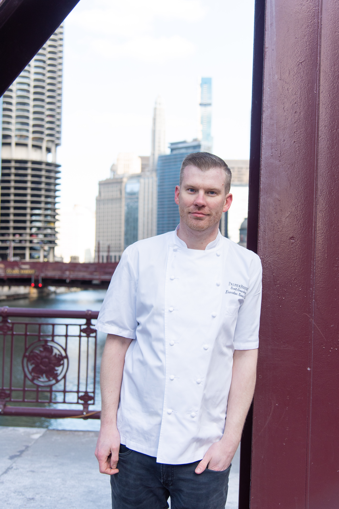

In the warm bustle of the kitchen, Chef Scott gathers his cooks around the stainless-steel prep table for their weekly innovation meeting. The aroma of herbs, simmering stocks, and freshly baked bread fills the air as he encourages each team member to share ideas, experiment with ingredients, and challenge traditional techniques. With a collaborative spirit and a passion for creativity, the group tastes, tests, and refines new dishes—blending classic culinary foundations with bold, modern twists. The meeting becomes a space where inspiration flows freely, where mistakes spark breakthroughs, and where every cook’s voice contributes to shaping the next evolution of the menu. Together, they transform the kitchen into a workshop of imagination, fueling a culture of innovation that keeps their cuisine fresh, exciting, and unforgettable.
Imagine enjoying restaurant-quality cuisine without ever leaving the comfort of your own home. Chef Scott brings the luxury of personalized dining directly to your table—crafting menus tailored to your tastes, dietary needs, and the occasion you’re celebrating. Whether it’s an intimate dinner, a special event, or a weeknight meal that needs an elevated touch, a private chef transforms dining into a seamless, memorable experience.
Meet Chef Scott
BIOGRAPHY
With over 20 years of culinary experience both in a hospitality setting and as a private chef, my menus showcase my diverse background of food preparation.
After graduating from Le Cordon Bleu, I continued to sharpen my culinary skills with some stapled hospitality food and beverage restaurants and hotels, including China Grill, Hard Rock Hotel, and Hilton.
With an appreciation to the entire food and beverage experience, I've curated many of my dishes with cocktails that satisfies the pallet perfectly.


During the tasting menu experience, Chef Scott presents each dish with care and confidence, serving up pure deliciousness to the client. Every course arrives as a small, flavorful journey—beautifully plated, thoughtfully crafted, and introduced with a brief story of its inspiration and ingredients. The chef watches eagerly as the client takes the first bite, hoping to capture that subtle moment of delight when flavors connect and the dish speaks for itself. With each plate, he aims to deliver not just food, but an immersive culinary experience that showcases creativity, skill, and passion. The tasting becomes a shared celebration of taste, artistry, and the joy of bringing exceptional food to the table.
Chef Scott and his team gather after a tasting consultation, where he works closely with his team to craft a seamless culinary experience for their client. Each dish is carefully prepared, presented, and tasted, with the team exchanging feedback, adjusting flavors, and refining presentations in real time. Collaboration is at the heart of the process—chefs, cooks, and servers coordinate to ensure that every detail, from seasoning to plating to pacing, exceeds expectations. The consultation is more than just tasting food; it’s a dynamic conversation between the kitchen and the client, where creativity, precision, and teamwork come together to shape a menu that is both memorable and perfectly tailored.